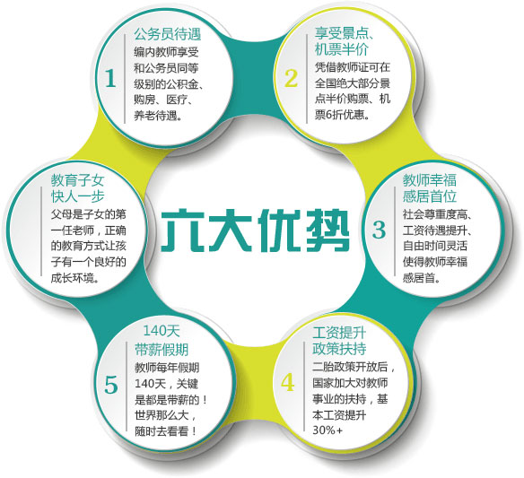
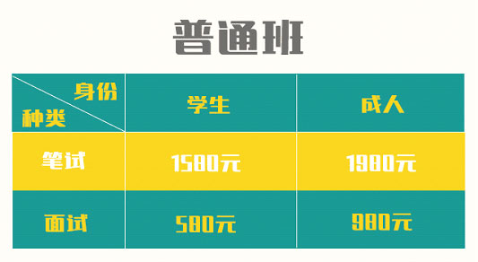
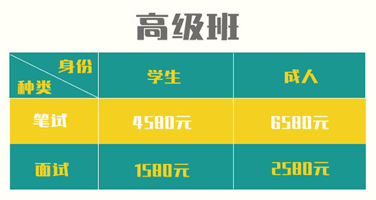

易考拉教师资格证培训开班啦！非师范生最后一次报考！
-
-
为什么要考教师证？
教师资格证是从事教师岗位所必须具备的相关资格证书，教师资格 证考试由国家教育部统一管理，各省自行组织考试。教师资格证全 国通用，它是进入教师行列的必要条件。
为什么选择我们？
易考拉与南京师培合作办学，推出教师资格证考试培训课程，将于 近期开班教学。想要考教师资格证的同学们快来报名吧！
易考拉（南京师培合作办学）长期开展企业人力资源管理师、公共 营养师、秘书、教师资格证等教育培训工作。师资力量雄厚，学校 配备独立会计专业教研组，教研组各成员教学经验丰富，教学设备 完善精良，教学环境舒适优雅，我校同步配套企业对口招聘直通车， 给广大学员提供最广阔的就业空间。是广大学员学习、培训、实践 的理想基地。
报名即送内部备考资料。上课方式：面授（小班教学：每班50人） - 
-
-
- 
- 
承诺：一期不会、下期免费重学。
重要通知！
根据国家教育体制改革试点工作总体部署和《教育部办公厅关于开展中小学教师资格制度试点工作的通知》，最终决定：2017年上半年将是全国范围内非师范最后一次报考。
报考条件
1.报考幼儿园、小学、初中教师资格的，应当具备大学专科及以上学历（其中具有中等幼师学历可以报考幼儿园教师资格，具有中等师范学历可以报考小学教师资格）；
2.报考高级中学教师资格的，应当具备高等师范院校或者其他大学本科及以上学历；
3.普通话要求：申报幼儿教师和语文学科需达到二甲以上（含二甲）；申报其他学科需二乙以上（含二乙）。以上各等级的教师资格证，自上而下兼容。普通高等学校全日
制在校三年级及以上学生和五年制高等职业学校全日制在校四年级及以上学生，可凭学校出具的在籍学习证明报考。
考试内容
考试内容总体分两大部分：笔试和面试。
一、笔试
幼儿园：综合素质（幼儿园）、保教知识与能力
小 学：综合素质（小学）、教育教学知识与能力
初级中学：综合素质（中学）、教育知识与能力、学科知识与教学能力
高级中学：综合素质（中学）、教育知识与能力、学科知识与教学能力
二、面试
面试分为现场编写指定教案和模拟真实课堂试讲两个环节。笔试成绩保留三年，笔试通过方可参加面试。
报名时间
网上报名时间：2017年1月初（具体时间视不同考区而定）
考试时间
江苏每年笔试考试一般安排在2月—3月，面试每个人的时间不同，一般在4月份，具体以通知为准。
报名方式
1.易考拉微信商城在线购买
2.联系电话：025-58865087
3.报名地址：南京信息工程大学人才公寓2幢1单元1401